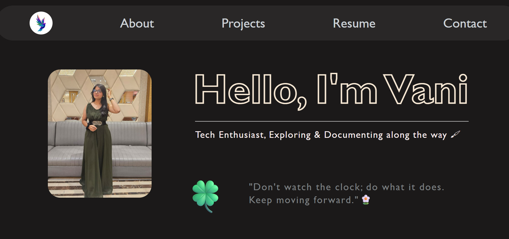

Project-4 (Web Development)📆
This portfolio website is my first major web development project and one of the most exciting things I have built so far. I wanted to create a place that represents who I am, showcases my work, and reflects my personality through design and code.
More than just a website, this project became my introduction to the world of web development. Every section, every animation, and every small design decision taught me something new and made the process incredibly rewarding.
Tech Stack I used :
| HTML - Structured the content and layout of the website
| CSS - Styled the website and created a responsive, visually appealing design
| Visual Studio Code - Used as my primary code editor throughout development
| Git & GitHub - Managed versions of the project and hosted the source code
How I Built It :
• Planned the overall structure and decided which sections to include.
• Designed the layout with a clean and modern look in mind.
• Built the website using semantic HTML.
• Styled each section using CSS while experimenting with different layouts and animations.
• Improved responsiveness to make the website work across different screen sizes.
• Tested, fixed bugs, and refined the overall user experience.
• Deployed the final project and continued making small improvements.
What I Learned :
| Breaking a large project into smaller tasks makes development much easier.
| Writing clean and organized code improves readability and future updates.
| Debugging is an important part of learning and often teaches more than getting everything right on the first try.
| Small design details can make a big difference in the overall user experience.
| Building projects is one of the best ways to truly understand concepts.
Looking back, this project was much more than creating a portfolio website. It was a learning experience that strengthened my problem solving skills, improved my confidence, and introduced me to the process of building something from scratch.
There were moments of confusion, plenty of debugging, and lots of experimentation, but each challenge made the final result even more satisfying.
This portfolio represents not only what I have built, but also where my web development journey truly began. It reminds me how much I have learned already and motivates me to keep creating, improving, and exploring new technologies.
